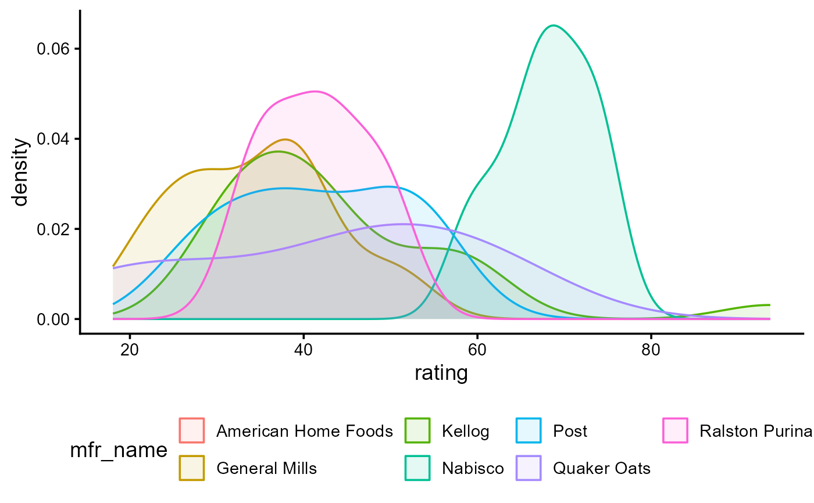

A multivariate dataset describing seventy-seven commonly available breakfast cereals, based on the information
now available on the FDA food label. The variable rating is a likely response variable in
statistical models.
Usage
data("cereal")Format
A data frame with 77 observations on the following 16 variables.
namecereal name, a character vector
mfrmanufacturer (A G K N P Q R), a character vector
typetype (cold/hot), a character vector
caloriescalories (number), a numeric vector
proteinprotein(g), a numeric vector
fatfat(g), a numeric vector
sodiumsodium(mg), a numeric vector
fiberdietary fiber(g), a numeric vector
carbocomplex carbohydrates(g), a numeric vector
sugarssugars(g), a numeric vector
potasspotassium(mg), a numeric vector
vitaminsvitamins & minerals (0, 25, or 100, respectively indicating "none added"; "enriched"; "FDA recommended"), a numeric vector
shelfdisplay shelf (1, 2, or 3, counting from the floor), a numeric vector
weightweight (in ounces) of one serving (serving size), a numeric vector
cupscups per serving, a numeric vector
ratinghealth rating of the cereal (unknown calculation method), a numeric vector
Source
From the American Statistical Association 1993 Statistical Graphics Exposition, 'Serial Correlation or Cereal Correlation ??', https://community.amstat.org/jointscsg-section/dataexpo/dataexpo1993.
Details
This dataset was used in the poster competition for the American Statistical association 1993 Statistical Graphics Exposition, titled Serial Correlation or Cereal Correlation ??.
The call for participation reads: "A multivariate dataset describing seventy-seven commonly available breakfast cereals, based on the information now available on the newly-mandated F&DA food label. What are you getting when you eat a bowl of cereal? Can you get a lot of fiber without a lot of calories? Can you describe what cereals are displayed on high, low, and middle shelves? The good news is that none of the cereals for which we collected data had any cholesterol, and manufacturers rarely use artificial sweeteners and colors, nowadays. However, there is still a lot of data for the consumer to understand while choosing a good breakfast cereal."
Further details on the variables and suggested analyses are available at https://community.amstat.org/jointscsg-section/dataexpo/dataexpo1993
The abbreviations for manufacturer, mfr, stand for:
AAmerican Home Food Products
GGeneral Mills
KKellog
NNabisco
PPost
QQuaker Oats
RRalston Purina
References
Jean Dos Santos, Breakfast Cereals: Data Analysis and Clustering, (Kaggle link doesn't work) Does a bunch of data cleaning and exploratory data analysis in R.
See also
MASS::UScereal has a similar dataset with fewer observations and variables, but with the variables normalized to a portion of one US cup.
https://www.kaggle.com/datasets/crawford/80-cereals Essentially the same dataset
Examples
library(dplyr)
#>
#> Attaching package: 'dplyr'
#> The following objects are masked from 'package:stats':
#>
#> filter, lag
#> The following objects are masked from 'package:base':
#>
#> intersect, setdiff, setequal, union
data(cereal)
str(cereal)
#> tibble [77 × 16] (S3: tbl_df/tbl/data.frame)
#> $ name : chr [1:77] "100% Bran" "100% Natural Bran" "All-Bran" "All-Bran with Extra Fiber" ...
#> $ mfr : chr [1:77] "N" "Q" "K" "K" ...
#> $ type : chr [1:77] "C" "C" "C" "C" ...
#> $ calories: num [1:77] 70 120 70 50 110 110 110 130 90 90 ...
#> $ protein : num [1:77] 4 3 4 4 2 2 2 3 2 3 ...
#> $ fat : num [1:77] 1 5 1 0 2 2 0 2 1 0 ...
#> $ sodium : num [1:77] 130 15 260 140 200 180 125 210 200 210 ...
#> $ fiber : num [1:77] 10 2 9 14 1 1.5 1 2 4 5 ...
#> $ carbo : num [1:77] 5 8 7 8 14 10.5 11 18 15 13 ...
#> $ sugars : num [1:77] 6 8 5 0 8 10 14 8 6 5 ...
#> $ potass : num [1:77] 280 135 320 330 NA 70 30 100 125 190 ...
#> $ vitamins: num [1:77] 25 0 25 25 25 25 25 25 25 25 ...
#> $ shelf : num [1:77] 3 3 3 3 3 1 2 3 1 3 ...
#> $ weight : num [1:77] 1 1 1 1 1 1 1 1.33 1 1 ...
#> $ cups : num [1:77] 0.33 1 0.33 0.5 0.75 0.75 1 0.75 0.67 0.67 ...
#> $ rating : num [1:77] 68.4 34 59.4 93.7 34.4 ...
# Add explicit name of manufacturer
# names for manufacturers
mfr_names <- c(
"A" = "American Home Foods",
"G" = "General Mills",
"K" = "Kellog",
"N" = "Nabisco",
"P" = "Post",
"Q" = "Quaker Oats",
"R" = "Ralston Purina"
)
# recode `mfr` as `mfr_name`
cereal <- cereal |>
mutate(mfr_name = recode(mfr, !!!mfr_names))
# density plot of ratings
library(ggplot2)
ggplot(data = cereal,
aes(x = rating, fill = mfr_name, color = mfr_name)) +
geom_density(alpha = 0.1) +
theme_classic(base_size = 14) +
theme(legend.position = "bottom")
#> Warning: Groups with fewer than two data points have been dropped.
#> Warning: Removed 1 row containing missing values or values outside the scale range
#> (`geom_density()`).
